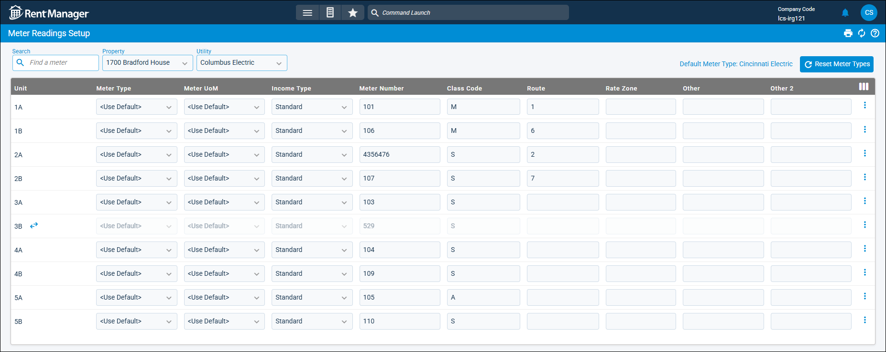

Source: https://rmxhelp.rentmanager.com/Topics/Express/CSH/MU-Meter-Reading-Setup.htm
Meter Readings Setup (Page)
On the Meter Readings Setup page, you can enter all the necessary information for setting up meters at specific units of a property and start billing tenants for usage of that metered utility. On this page you can specify the type of meter that is billed, assign meters to units, and optionally enter previous consumption history.
Related Privileges
| Group | Privilege | Column |
|---|---|---|
| Properties/Units | Properties | View |
| Utilities | Metered utilities | Enabled |
For more information, refer to Control User Access.
To setup meter readings for a unit, go to  arrow_forward Services arrow_forward Metered Utilities arrow_forward Meter Readings Setup.
arrow_forward Services arrow_forward Metered Utilities arrow_forward Meter Readings Setup.

Filter Information
You can filter the units to set up meter readings based on the following criteria:
| Filter | Description |
|---|---|
|
Default Meter Type |
Select the meter type to be used as the default type. All meter types set as <Use Default> in the Meter Type column use this meter as their type. More Information To reset the Meter Type of all the units displayed on the Meter Readings Setup page to <Use Default>, click |
|
Property |
The property at which the unit is located. More Information This field populates only with the properties to which you have access. Your access to properties can be managed from your user account or on the property's details page. For more information, refer to Limit Access to a Property. |
|
Search |
Use the Search box and enter the desired search criteria to narrow register content. The list updates to display results Namethat match the search criteria. |
|
Utility |
The name of the utility you are setting up readings for. |
Field Descriptions
Each unit associated with the Property displays on its own row. The following fields are available on this page.
| Field | Description |
|---|---|
|
Class Code |
A per-tenant, single capital letter for the class, which is typically used for customers who receive medical discounts. For example, M for medical. |
|
Income Type |
The income type assigned to the meter. Standard meters use the baseline utility charge calculation, and Low Income meters allow for a reduced rate based on the tenant. |
|
Meter Number |
The unique meter number for each unit. This may be a serial number or other identification number. |
|
Meter Type |
The name of the meter type used to determine the utility charge amount based on consumption. If <Use Default> is selected, the meter type is pulled from the Default Meter Typeon the top of the page. To stop posting utilities to the unit, select <None>. For more information, refer to Meter Types (Page). |
|
Meter UoM |
The unit of measurement (e.g., Gallons, Cubic Feet (CF)) used on the meter for tracking utility usage. |
|
Other, Other 2, etc. |
User-defined fields that can be used as part of Metered Utilities (MU) scripting. By default, only Other and Other 2 columns display. Other columns can be added via |
|
Rate Zone |
A comment defining the geographic area, such as the name of the city in which the unit is located. This field is helpful to identify meters that may need to charge different rates based on location and set up variables in Metered Utilities Plus (MU-Plus) to charge those rates automatically. |
|
Route |
The number that represents the order in which this meter is read. The first meter read has a value of 1, the second a value of 2, and so on. More Information If you use rmAppSuite Pro for meter readings, establishing routes can save your technicians a tremendous amount of time when taking those readings. The app allows users to add readings in the same order as the route, removing the need to manually search for the appropriate meter at each stop. |
|
Unit |
The name of the unit associated with the selected property. |
Row Actions
The following actions are available by clicking  next to each unit.
next to each unit.
| Action | Description |
|---|---|
|
Swap Meter/Cancel Swap |
Record the swap meter process for the unit in Rent Manager (e.g., to replace faulty equipment, upgrade to smart meters). If the unit is currently in the swap meter process, |
|
View Consumption History |
View detailed information about the unit's consumption history. |